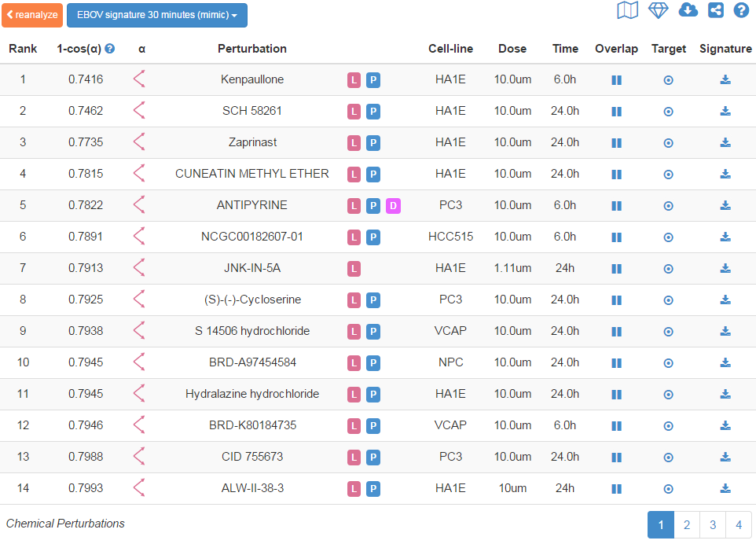

L1000CDS²
L1000CDS²
An ultra-fast LINCS L1000 Characteristic Direction Signature Search Engine
Summary
L1000CDS² is a LINCS L1000 characteristic direction signature search engine to find consensus signatures that match users’ input gene lists or input signatures. The underlying dataset is the LINCS L1000 small molecule expression profiles generated at the Broad Institute by the Connectivity Map team. The differentially expressed (DE) genes of these profiles were calculated using the characteristic direction method. Depending on the user’s input, L1000CDS² uses either a gene-set method or cosine distance method to run the search. When up/down gene lists are submitted to L1000CDS², the search engine compares the input gene lists to the DE genes computed from the LINCS L1000 data and descriptive information of the top 50 matched signatures is returned. When a signature is submitted to L1000CDS² in the format of "gene symbol, expression value", the search engine calculates a cosine distance between the input signature and every characteristic direction signature in the database, and the top 50 signatures of either the largest (reverse mode) or the smallest (mimic mode) cosine distances are returned. L1000CDS² leverages the efficiency of matrix operations to perform the search and finishes a query against more than 20,000 signatures in less than 0.1sec using the gene-set method or less than 3sec using the cosine distance method. The app is developed by the Ma'ayan Laboratory at the Icahn School of Medicine at Mount Sinai for the BD2K-LINCS-DCIC and the KMC-IDG NIH funded projects.
L1000 mRNA Expression Data
The L1000 mRNA gene-expression dataset is generated as part of the Library of Integrated Network-based Cellular Signatures (LINCS) project, a Common Fund program run by NIH. LINCS aims to systematically profile the molecular and phenotypical outcomes of agent perturbed human cells. The variety of agents includes chemical compounds, different micro-environments, endogenous ligands, gene knockdown and overexpression. The L1000 dataset comprises of over 1 million gene expression profiles of chemically or genetically perturbed human cell-lines. The L1000 technology developed at Broad Institute measures only ~1000 genes in an experiment and estimates the expression of the rest of the transcriptome using an empirical model. In this way, the technology significantly reduces the cost and makes large-scale gene expression profiling possible. L1000CDS² currently includes a subset of the chemically perturbed gene expression profiles, specifically the profiles in the CPC and CPD peturbagen groups. After averaging replicates and removing insignificant signatures, we remain with 22,926 signatures in the L1000CDS² database.
Tutorial
Search
The entry point into L1000CDS² is to paste up/down gene lists into the up/down gene text boxes or paste a signature into the up gene text box. The search button will only become enabled when both up/down genes text boxes are filled by gene lists or when the up gene textbox is filled with a signature. Click the examples to see the formats of gene-set and signature inputs. Click the Search button and the information for the top 50 signatures will be displayed in a table on the right side.
Example
Clicking the Gene-set Example button will fill in an example of up/down gene lists in the text boxes for a demo search using the gene-set method. Clicking the Signature Example button will fill in an example of a signature in the up gene text box for a demo of searching with the cosine distance method.
EBOV
Clicking the EBOV Signatures button will open a table of three EBOV signatures at three time points. Select a signature by a single click and click the Search button to perform a cosine distance search. The selected signature will be automatically filled in the up gene text box.
Mimic/Reverse
In the mimic mode for the gene-set search, the input up genes are intersected with the up genes of the gene expression profiles in the L1000CDS² database, and the input down genes are intersected with the down genes for each entry in the database. In the reverse mode for the gene-set search, the input up genes are intersected with the down genes, and the input down genes are intersected with the up genes. When a cosine distance search is performed, the top 50 signatures will be those of the smallest cosine distances from the input signature in the mimic mode, or those with the largest cosine distances in the reverse mode. The default mode is reverse.

Fig. 1 Screenshot of the input text boxes, the search button, the example button, the EBOV signatures button, the diesease signatures button and the mimic/reverse slider.
Diseases
Clicking on the Diseases Signature button will open a table of disease names and their tissue types including the GEO ID refering to the original study for the disease signature (Fig 2). The table is searchable by disease name or tissue type and can be sorted by either column. Each row represents a differential expression signature of a disease and consists of the diferentially expressed genes and their expression values in the disease compared with the relevant normal tissue. These signatures were calculated from gene expression data deposited in GEO. Clicking on a row will select that disease. Clicking on the search button will fill in the signature of the selected disease in the up gene text boxes and perform the search for small molecules at the same time.

Fig 2 Screenshot of the disease table
Table
The search results are rendered as a paginated table with 12 entries on each page (Fig 3). Each entry provides five pieces of information about the signature: score, perturbation, cell-line, dose and time point. The score is the overlap between the input DE genes and the signature DE genes divided by the effective input. The effective input is the length of the intersection between the input genes and the L1000 genes since some input lists contain genes that are not present in the L1000 dataset. For the cosine distance search, the score is the cosine distance between the input signature and the L1000 characteristic direction signatures. The consensus signatures are sorted by their scores in descending order. The perturbation column shows the names of the chemical perturbations. Clicking on a name will direct the user to a web page within LIFE that catalogs detailed information about the chemical compound. There is also a signature column in the table. Clicking the download button in that column will download all the information about a signature as a JSON file.
Fig. 3 Screenshot of the paginated results table and the share button.
Share
After performing a search, a share button (Fig 3) will appear above the results table at the the top right corner. Clicking on the button will show a unique URL for sharing the search results.
API
[POST] http://amp.pharm.mssm.edu/L1000CDS2/query
| upGenes | [String] | An array of up-regulated Entrez gene symbols. |
| dnGenes | [String] | An array of down-regulated Entrez gene symbols. |
| aggravate | Boolean | True to perform the search in mimic mode and false in reverse mode. |
| searchMethod | String | "geneSet" |
| input | Object | A wrapper for input gene symbols and expression values. |
| input.genes | [String] | An array of Entrez gene symbols. |
| input.vals | [Number] | An array of differential expression values, e.g. t-test statistics. |
| aggravate | Boolean | True to perform the search in mimic mode and false in reverse mode. |
| searchMethod | String | "CD" |
| shareId | String | Unique ID for sharing the search results |
| topMeta | [Object] | Descriptive information of the top 50 consensus signatures |
| topMeta[ ].score | Double | Score |
| topMeta[ ].cell_id | String | Cell-line |
| topMeta[ ].pert_desc | String | Perturbation name |
| topMeta[ ].pert_id | String | Unique identifier for a perturbation |
| topMeta[ ].pert_time | String | Time point |
| topMeta[ ].pert_time_unit | String | Time point unit |
| topMeta[ ].pert_dose | String | Dose |
| topMeta[ ].pert_dose_unit | String | Dose unit |
| topMeta[ ].sig_id | String | Unique identifier for a signature |
import requests
import json
url = 'http://amp.pharm.mssm.edu/L1000CDS2/query'
# gene-set search example
payload = {"upGenes":["KDM5A","EGR1","RELB"],
"dnGenes":["USP22","PHGDH","HADH"],"aggravate":True,"searchMethod":"geneSet"}
headers = {'content-type':'application/json'}
r = requests.post(url,data=json.dumps(payload),headers=headers)
print(r.json)
# cosine distance search example
payload = {"input"{"genes":["DDIT4","HIG2","FLT1","ADM","SLC2A3","ZNF331"],
"vals":[9.97,10.16,7.66,17.80,20.29,15.22]},"aggravate":True,"searchMethod":"CD"}
headers = {'content-type':'application/json'}
r = requests.post(url,data=json.dumps(payload),headers=headers)
print(r.json)
Contact
Please contact Avi Ma’ayan and Qiaonan Duan for comments, suggestions, and support: avi.maayan@mssm.edu, qiaonan.duan@mssm.edu.